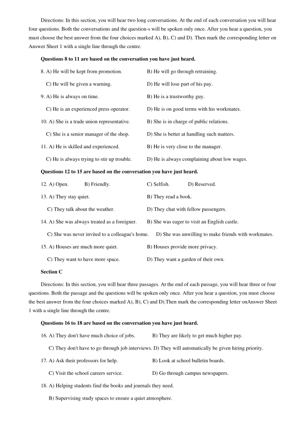
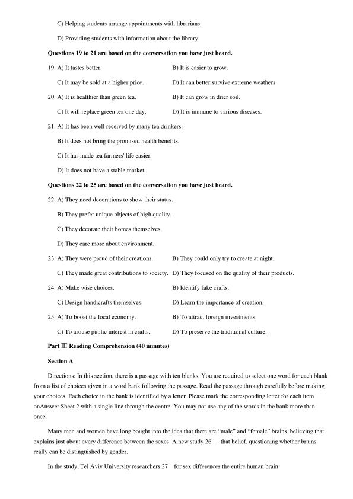
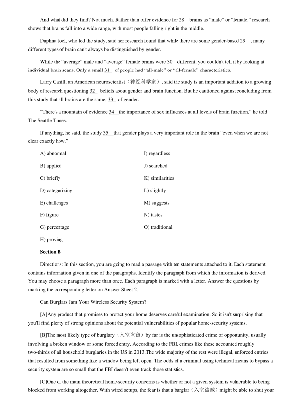
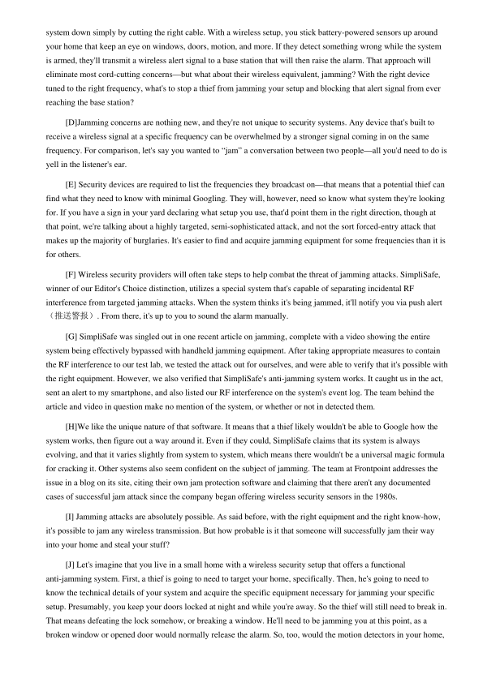
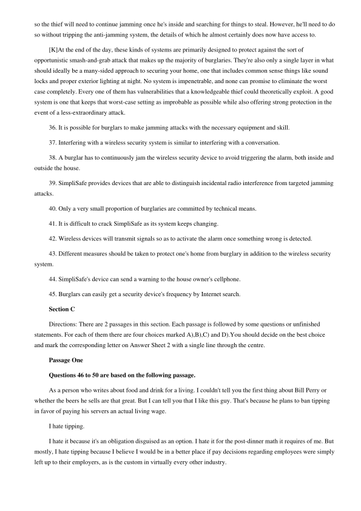
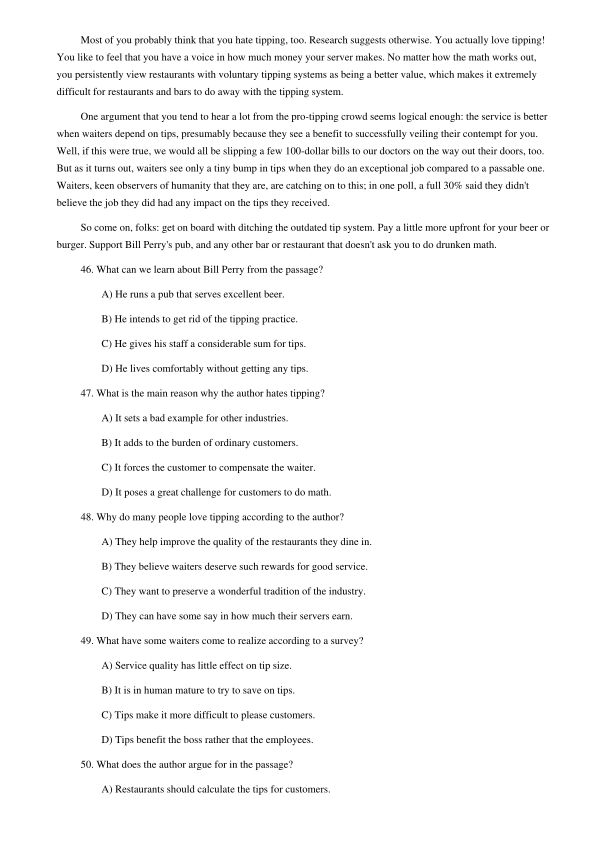
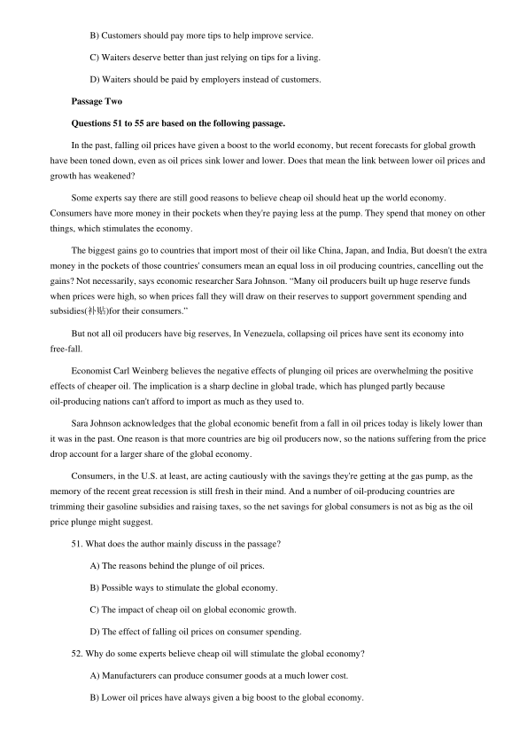
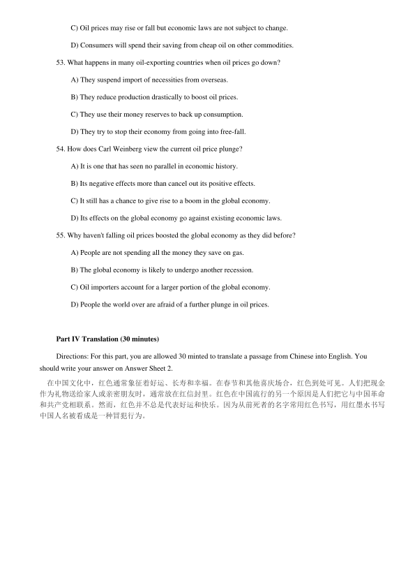

第 1 / 9 页

2016 年12 月大学英语四级真题（卷一）
Part I Writing (30 minutes)
Directions: For this part, you are allowed 30 minutes to write an essay. Suppose you have two options upon
graduation: one is to take a job in a company and the other to go to a graduate school. You are to make a choice
between the two. Write an essay to explain the reasons for your choice. You should write at least 120 words but no
more than 180 words.
Part ⅡListening Comprehension (25minutes)
Section A
Directions: In this section, you will hear three news reports. At the end of each news report, you will hear two
or three questions. Both the news report and the questions will be spoken only once. After you hear a question, you
must choose the best answer from the four choices marked A), B), C) and D). Then mark the corresponding letter on
Answer Sheet 1 with a single line through the centre.
Questions 1 to 2 are based on the conversation you have just heard.
1. A) It was dangerous to live in
C) He could no longer pay the rent.
B) It was going to be renovated.
D) He had sold it to the royal family.
2. A) A strike.
C) A forest fire.
B) A storm.
D) A terrorist attack.
Questions 3 to 4 are based on the conversation you have just heard.
3. A) They lost contact with the emergency department.
B) They were trapped in an underground elevator.
C) They were injured by suddenly falling rocks.
D) They sent calls for help via a portable radio.
4. A) They tried hard to repair the elevator.
B) They released the details of the accident.
C) They sent supplies to keep the miners warm. D) They provided the miners with food and water.
Questions 5 to 7 are based on the conversation you have just heard.
5. A) Raise postage rates.
B) Improve its services.
C) Redesign delivery routes.
D) Close some of its post offices.
6. A) Shortening business hours.
B) Closing offices on holidays.
C) Stopping mail delivery on Saturdays.
D) Computerizing mail sorting processes.
7. A) Many post office staff will lose their jobs.
B) Many people will begin to complain.
C) Taxpayers will be very pleased.
D) A lot of controversy will arise.
Section B
查看 / 复制本页文字
2016 年12 月大学英语四级真题（卷一） Part I Writing (30 minutes) Directions: For this part, you are allowed 30 minutes to write an essay. Suppose you have two options upon graduation: one is to take a job in a company and the other to go to a graduate school. You are to make a choice between the two. Write an essay to explain the reasons for your choice. You should write at least 120 words but no more than 180 words. Part ⅡListening Comprehension (25minutes) Section A Directions: In this section, you will hear three news reports. At the end of each news report, you will hear two or three questions. Both the news report and the questions will be spoken only once. After you hear a question, you must choose the best answer from the four choices marked A), B), C) and D). Then mark the corresponding letter on Answer Sheet 1 with a single line through the centre. Questions 1 to 2 are based on the conversation you have just heard. 1. A) It was dangerous to live in C) He could no longer pay the rent. B) It was going to be renovated. D) He had sold it to the royal family. 2. A) A strike. C) A forest fire. B) A storm. D) A terrorist attack. Questions 3 to 4 are based on the conversation you have just heard. 3. A) They lost contact with the emergency department. B) They were trapped in an underground elevator. C) They were injured by suddenly falling rocks. D) They sent calls for help via a portable radio. 4. A) They tried hard to repair the elevator. B) They released the details of the accident. C) They sent supplies to keep the miners warm. D) They provided the miners with food and water. Questions 5 to 7 are based on the conversation you have just heard. 5. A) Raise postage rates. B) Improve its services. C) Redesign delivery routes. D) Close some of its post offices. 6. A) Shortening business hours. B) Closing offices on holidays. C) Stopping mail delivery on Saturdays. D) Computerizing mail sorting processes. 7. A) Many post office staff will lose their jobs. B) Many people will begin to complain. C) Taxpayers will be very pleased. D) A lot of controversy will arise. Section B
第 2 / 9 页

Directions: In this section, you will hear two long conversations. At the end of each conversation you will hear
four questions. Both the conversations and the question-s will be spoken only once. After you hear a question, you
must choose the best answer from the four choices marked A), B), C) and D). Then mark the corresponding letter on
Answer Sheet 1 with a single line through the centre.
Questions 8 to 11 are based on the conversation you have just heard.
8. A) He will be kept from promotion.
B) He will go through retraining.
C) He will be given a warning.
D) He will lose part of his pay.
9. A) He is always on time.
B) He is a trustworthy guy.
C) He is an experienced press operator.
D) He is on good terms with his workmates.
10. A) She is a trade union representative.
B) She is in charge of public relations.
C) She is a senior manager of the shop.
D) She is better at handling such matters.
11. A) He is skilled and experienced.
B) He is very close to the manager.
C) He is always trying to stir up trouble.
D) He is always complaining about low wages.
Questions 12 to 15 are based on the conversation you have just heard.
12. A) Open.
B) Friendly.
C) Selfish.
D) Reserved.
13. A) They stay quiet.
B) They read a book.
C) They talk about the weather.
D) They chat with fellow passengers.
14. A) She was always treated as a foreigner.
B) She was eager to visit an English castle.
C) She was never invited to a colleague's home.
D) She was unwilling to make friends with workmates.
15. A) Houses are much more quiet.
B) Houses provide more privacy.
C) They want to have more space.
D) They want a garden of their own.
Section C
Directions: In this section, you will hear three passages. At the end of each passage, you will hear three or four
questions. Both the passage and the questions will be spoken only once. After you hear a question, you must choose
the best answer from the four choices marked A), B), C) and D).Then mark the corresponding letter onAnswer Sheet
1 with a single line through the centre.
Questions 16 to 18 are based on the conversation you have just heard.
16. A) They don't have much choice of jobs.
B) They are likely to get much higher pay.
C) They don't have to go through job interviews. D) They will automatically be given hiring priority.
17. A) Ask their professors for help.
B) Look at school bulletin boards.
C) Visit the school careers service.
D) Go through campus newspapers.
18. A) Helping students find the books and journals they need.
B) Supervising study spaces to ensure a quiet atmosphere.
查看 / 复制本页文字
Directions: In this section, you will hear two long conversations. At the end of each conversation you will hear four questions. Both the conversations and the question-s will be spoken only once. After you hear a question, you must choose the best answer from the four choices marked A), B), C) and D). Then mark the corresponding letter on Answer Sheet 1 with a single line through the centre. Questions 8 to 11 are based on the conversation you have just heard. 8. A) He will be kept from promotion. B) He will go through retraining. C) He will be given a warning. D) He will lose part of his pay. 9. A) He is always on time. B) He is a trustworthy guy. C) He is an experienced press operator. D) He is on good terms with his workmates. 10. A) She is a trade union representative. B) She is in charge of public relations. C) She is a senior manager of the shop. D) She is better at handling such matters. 11. A) He is skilled and experienced. B) He is very close to the manager. C) He is always trying to stir up trouble. D) He is always complaining about low wages. Questions 12 to 15 are based on the conversation you have just heard. 12. A) Open. B) Friendly. C) Selfish. D) Reserved. 13. A) They stay quiet. B) They read a book. C) They talk about the weather. D) They chat with fellow passengers. 14. A) She was always treated as a foreigner. B) She was eager to visit an English castle. C) She was never invited to a colleague's home. D) She was unwilling to make friends with workmates. 15. A) Houses are much more quiet. B) Houses provide more privacy. C) They want to have more space. D) They want a garden of their own. Section C Directions: In this section, you will hear three passages. At the end of each passage, you will hear three or four questions. Both the passage and the questions will be spoken only once. After you hear a question, you must choose the best answer from the four choices marked A), B), C) and D).Then mark the corresponding letter onAnswer Sheet 1 with a single line through the centre. Questions 16 to 18 are based on the conversation you have just heard. 16. A) They don't have much choice of jobs. B) They are likely to get much higher pay. C) They don't have to go through job interviews. D) They will automatically be given hiring priority. 17. A) Ask their professors for help. B) Look at school bulletin boards. C) Visit the school careers service. D) Go through campus newspapers. 18. A) Helping students find the books and journals they need. B) Supervising study spaces to ensure a quiet atmosphere.
第 3 / 9 页

C) Helping students arrange appointments with librarians.
D) Providing students with information about the library.
Questions 19 to 21 are based on the conversation you have just heard.
19. A) It tastes better.
B) It is easier to grow.
C) It may be sold at a higher price.
D) It can better survive extreme weathers.
20. A) It is healthier than green tea.
B) It can grow in drier soil.
C) It will replace green tea one day.
D) It is immune to various diseases.
21. A) It has been well received by many tea drinkers.
B) It does not bring the promised health benefits.
C) It has made tea farmers' life easier.
D) It does not have a stable market.
Questions 22 to 25 are based on the conversation you have just heard.
22. A) They need decorations to show their status.
B) They prefer unique objects of high quality.
C) They decorate their homes themselves.
D) They care more about environment.
23. A) They were proud of their creations.
B) They could only try to create at night.
C) They made great contributions to society. D) They focused on the quality of their products.
24. A) Make wise choices.
B) Identify fake crafts.
C) Design handicrafts themselves.
D) Learn the importance of creation.
25. A) To boost the local economy.
B) To attract foreign investments.
C) To arouse public interest in crafts.
D) To preserve the traditional culture.
Part ⅢReading Comprehension (40 minutes)
Section A
Directions: In this section, there is a passage with ten blanks. You are required to select one word for each blank
from a list of choices given in a word bank following the passage. Read the passage through carefully before making
your choices. Each choice in the bank is identified by a letter. Please mark the corresponding letter for each item
onAnswer Sheet 2 with a single line through the centre. You may not use any of the words in the bank more than
once.
Many men and women have long bought into the idea that there are “male” and “female” brains, believing that
explains just about every difference between the sexes. A new study 26
that belief, questioning whether brains
really can be distinguished by gender.
In the study, Tel Aviv University researchers 27
for sex differences the entire human brain.
查看 / 复制本页文字
C) Helping students arrange appointments with librarians. D) Providing students with information about the library. Questions 19 to 21 are based on the conversation you have just heard. 19. A) It tastes better. B) It is easier to grow. C) It may be sold at a higher price. D) It can better survive extreme weathers. 20. A) It is healthier than green tea. B) It can grow in drier soil. C) It will replace green tea one day. D) It is immune to various diseases. 21. A) It has been well received by many tea drinkers. B) It does not bring the promised health benefits. C) It has made tea farmers' life easier. D) It does not have a stable market. Questions 22 to 25 are based on the conversation you have just heard. 22. A) They need decorations to show their status. B) They prefer unique objects of high quality. C) They decorate their homes themselves. D) They care more about environment. 23. A) They were proud of their creations. B) They could only try to create at night. C) They made great contributions to society. D) They focused on the quality of their products. 24. A) Make wise choices. B) Identify fake crafts. C) Design handicrafts themselves. D) Learn the importance of creation. 25. A) To boost the local economy. B) To attract foreign investments. C) To arouse public interest in crafts. D) To preserve the traditional culture. Part ⅢReading Comprehension (40 minutes) Section A Directions: In this section, there is a passage with ten blanks. You are required to select one word for each blank from a list of choices given in a word bank following the passage. Read the passage through carefully before making your choices. Each choice in the bank is identified by a letter. Please mark the corresponding letter for each item onAnswer Sheet 2 with a single line through the centre. You may not use any of the words in the bank more than once. Many men and women have long bought into the idea that there are “male” and “female” brains, believing that explains just about every difference between the sexes. A new study 26 that belief, questioning whether brains really can be distinguished by gender. In the study, Tel Aviv University researchers 27 for sex differences the entire human brain.
第 4 / 9 页

And what did they find? Not much. Rather than offer evidence for 28
brains as “male” or “female,” research
shows that brains fall into a wide range, with most people falling right in the middle.
Daphna Joel, who led the study, said her research found that while there are some gender-based 29
, many
different types of brain can't always be distinguished by gender.
While the “average” male and “average” female brains were 30
different, you couldn't tell it by looking at
individual brain scans. Only a small 31
of people had “all-male” or “all-female” characteristics.
Larry Cahill, an American neuroscientist（神经科学家）, said the study is an important addition to a growing
body of research questioning 32
beliefs about gender and brain function. But he cautioned against concluding from
this study that all brains are the same, 33
of gender.
“There's a mountain of evidence 34
the importance of sex influences at all levels of brain function,” he told
The Seattle Times.
If anything, he said, the study 35
that gender plays a very important role in the brain “even when we are not
clear exactly how.”
A) abnormal
I) regardless
B) applied
J) searched
C) briefly
K) similarities
D) categorizing
L) slightly
E) challenges
M) suggests
F) figure
N) tastes
G) percentage
O) traditional
H) proving
Section B
Directions: In this section, you are going to read a passage with ten statements attached to it. Each statement
contains information given in one of the paragraphs. Identify the paragraph from which the information is derived.
You may choose a paragraph more than once. Each paragraph is marked with a letter. Answer the questions by
marking the corresponding letter on Answer Sheet 2.
Can Burglars Jam Your Wireless Security System?
[A]Any product that promises to protect your home deserves careful examination. So it isn't surprising that
you'll find plenty of strong opinions about the potential vulnerabilities of popular home-security systems.
[B]The most likely type of burglary（入室盗窃）by far is the unsophisticated crime of opportunity, usually
involving a broken window or some forced entry. According to the FBI, crimes like these accounted roughly
two-thirds of all household burglaries in the US in 2013.The wide majority of the rest were illegal, unforced entries
that resulted from something like a window being left open. The odds of a criminal using technical means to bypass a
security system are so small that the FBI doesn't even track those statistics.
[C]One of the main theoretical home-security concerns is whether or not a given system is vulnerable to being
blocked from working altogether. With wired setups, the fear is that a burglar（入室盗贼）might be able to shut your
查看 / 复制本页文字
And what did they find? Not much. Rather than offer evidence for 28 brains as “male” or “female,” research shows that brains fall into a wide range, with most people falling right in the middle. Daphna Joel, who led the study, said her research found that while there are some gender-based 29 , many different types of brain can't always be distinguished by gender. While the “average” male and “average” female brains were 30 different, you couldn't tell it by looking at individual brain scans. Only a small 31 of people had “all-male” or “all-female” characteristics. Larry Cahill, an American neuroscientist（神经科学家）, said the study is an important addition to a growing body of research questioning 32 beliefs about gender and brain function. But he cautioned against concluding from this study that all brains are the same, 33 of gender. “There's a mountain of evidence 34 the importance of sex influences at all levels of brain function,” he told The Seattle Times. If anything, he said, the study 35 that gender plays a very important role in the brain “even when we are not clear exactly how.” A) abnormal I) regardless B) applied J) searched C) briefly K) similarities D) categorizing L) slightly E) challenges M) suggests F) figure N) tastes G) percentage O) traditional H) proving Section B Directions: In this section, you are going to read a passage with ten statements attached to it. Each statement contains information given in one of the paragraphs. Identify the paragraph from which the information is derived. You may choose a paragraph more than once. Each paragraph is marked with a letter. Answer the questions by marking the corresponding letter on Answer Sheet 2. Can Burglars Jam Your Wireless Security System? [A]Any product that promises to protect your home deserves careful examination. So it isn't surprising that you'll find plenty of strong opinions about the potential vulnerabilities of popular home-security systems. [B]The most likely type of burglary（入室盗窃）by far is the unsophisticated crime of opportunity, usually involving a broken window or some forced entry. According to the FBI, crimes like these accounted roughly two-thirds of all household burglaries in the US in 2013.The wide majority of the rest were illegal, unforced entries that resulted from something like a window being left open. The odds of a criminal using technical means to bypass a security system are so small that the FBI doesn't even track those statistics. [C]One of the main theoretical home-security concerns is whether or not a given system is vulnerable to being blocked from working altogether. With wired setups, the fear is that a burglar（入室盗贼）might be able to shut your
第 5 / 9 页

system down simply by cutting the right cable. With a wireless setup, you stick battery-powered sensors up around
your home that keep an eye on windows, doors, motion, and more. If they detect something wrong while the system
is armed, they'll transmit a wireless alert signal to a base station that will then raise the alarm. That approach will
eliminate most cord-cutting concerns—but what about their wireless equivalent, jamming? With the right device
tuned to the right frequency, what's to stop a thief from jamming your setup and blocking that alert signal from ever
reaching the base station?
[D]Jamming concerns are nothing new, and they're not unique to security systems. Any device that's built to
receive a wireless signal at a specific frequency can be overwhelmed by a stronger signal coming in on the same
frequency. For comparison, let's say you wanted to “jam” a conversation between two people—all you'd need to do is
yell in the listener's ear.
[E] Security devices are required to list the frequencies they broadcast on—that means that a potential thief can
find what they need to know with minimal Googling. They will, however, need so know what system they're looking
for. If you have a sign in your yard declaring what setup you use, that'd point them in the right direction, though at
that point, we're talking about a highly targeted, semi-sophisticated attack, and not the sort forced-entry attack that
makes up the majority of burglaries. It's easier to find and acquire jamming equipment for some frequencies than it is
for others.
[F] Wireless security providers will often take steps to help combat the threat of jamming attacks. SimpliSafe,
winner of our Editor's Choice distinction, utilizes a special system that's capable of separating incidental RF
interference from targeted jamming attacks. When the system thinks it's being jammed, it'll notify you via push alert
（推送警报）. From there, it's up to you to sound the alarm manually.
[G] SimpliSafe was singled out in one recent article on jamming, complete with a video showing the entire
system being effectively bypassed with handheld jamming equipment. After taking appropriate measures to contain
the RF interference to our test lab, we tested the attack out for ourselves, and were able to verify that it's possible with
the right equipment. However, we also verified that SimpliSafe's anti-jamming system works. It caught us in the act,
sent an alert to my smartphone, and also listed our RF interference on the system's event log. The team behind the
article and video in question make no mention of the system, or whether or not in detected them.
[H]We like the unique nature of that software. It means that a thief likely wouldn't be able to Google how the
system works, then figure out a way around it. Even if they could, SimpliSafe claims that its system is always
evolving, and that it varies slightly from system to system, which means there wouldn't be a universal magic formula
for cracking it. Other systems also seem confident on the subject of jamming. The team at Frontpoint addresses the
issue in a blog on its site, citing their own jam protection software and claiming that there aren't any documented
cases of successful jam attack since the company began offering wireless security sensors in the 1980s.
[I] Jamming attacks are absolutely possible. As said before, with the right equipment and the right know-how,
it's possible to jam any wireless transmission. But how probable is it that someone will successfully jam their way
into your home and steal your stuff?
[J] Let's imagine that you live in a small home with a wireless security setup that offers a functional
anti-jamming system. First, a thief is going to need to target your home, specifically. Then, he's going to need to
know the technical details of your system and acquire the specific equipment necessary for jamming your specific
setup. Presumably, you keep your doors locked at night and while you're away. So the thief will still need to break in.
That means defeating the lock somehow, or breaking a window. He'll need to be jamming you at this point, as a
broken window or opened door would normally release the alarm. So, too, would the motion detectors in your home,
查看 / 复制本页文字
system down simply by cutting the right cable. With a wireless setup, you stick battery-powered sensors up around your home that keep an eye on windows, doors, motion, and more. If they detect something wrong while the system is armed, they'll transmit a wireless alert signal to a base station that will then raise the alarm. That approach will eliminate most cord-cutting concerns—but what about their wireless equivalent, jamming? With the right device tuned to the right frequency, what's to stop a thief from jamming your setup and blocking that alert signal from ever reaching the base station? [D]Jamming concerns are nothing new, and they're not unique to security systems. Any device that's built to receive a wireless signal at a specific frequency can be overwhelmed by a stronger signal coming in on the same frequency. For comparison, let's say you wanted to “jam” a conversation between two people—all you'd need to do is yell in the listener's ear. [E] Security devices are required to list the frequencies they broadcast on—that means that a potential thief can find what they need to know with minimal Googling. They will, however, need so know what system they're looking for. If you have a sign in your yard declaring what setup you use, that'd point them in the right direction, though at that point, we're talking about a highly targeted, semi-sophisticated attack, and not the sort forced-entry attack that makes up the majority of burglaries. It's easier to find and acquire jamming equipment for some frequencies than it is for others. [F] Wireless security providers will often take steps to help combat the threat of jamming attacks. SimpliSafe, winner of our Editor's Choice distinction, utilizes a special system that's capable of separating incidental RF interference from targeted jamming attacks. When the system thinks it's being jammed, it'll notify you via push alert （推送警报）. From there, it's up to you to sound the alarm manually. [G] SimpliSafe was singled out in one recent article on jamming, complete with a video showing the entire system being effectively bypassed with handheld jamming equipment. After taking appropriate measures to contain the RF interference to our test lab, we tested the attack out for ourselves, and were able to verify that it's possible with the right equipment. However, we also verified that SimpliSafe's anti-jamming system works. It caught us in the act, sent an alert to my smartphone, and also listed our RF interference on the system's event log. The team behind the article and video in question make no mention of the system, or whether or not in detected them. [H]We like the unique nature of that software. It means that a thief likely wouldn't be able to Google how the system works, then figure out a way around it. Even if they could, SimpliSafe claims that its system is always evolving, and that it varies slightly from system to system, which means there wouldn't be a universal magic formula for cracking it. Other systems also seem confident on the subject of jamming. The team at Frontpoint addresses the issue in a blog on its site, citing their own jam protection software and claiming that there aren't any documented cases of successful jam attack since the company began offering wireless security sensors in the 1980s. [I] Jamming attacks are absolutely possible. As said before, with the right equipment and the right know-how, it's possible to jam any wireless transmission. But how probable is it that someone will successfully jam their way into your home and steal your stuff? [J] Let's imagine that you live in a small home with a wireless security setup that offers a functional anti-jamming system. First, a thief is going to need to target your home, specifically. Then, he's going to need to know the technical details of your system and acquire the specific equipment necessary for jamming your specific setup. Presumably, you keep your doors locked at night and while you're away. So the thief will still need to break in. That means defeating the lock somehow, or breaking a window. He'll need to be jamming you at this point, as a broken window or opened door would normally release the alarm. So, too, would the motion detectors in your home,
第 6 / 9 页

so the thief will need to continue jamming once he's inside and searching for things to steal. However, he'll need to do
so without tripping the anti-jamming system, the details of which he almost certainly does now have access to.
[K]At the end of the day, these kinds of systems are primarily designed to protect against the sort of
opportunistic smash-and-grab attack that makes up the majority of burglaries. They're also only a single layer in what
should ideally be a many-sided approach to securing your home, one that includes common sense things like sound
locks and proper exterior lighting at night. No system is impenetrable, and none can promise to eliminate the worst
case completely. Every one of them has vulnerabilities that a knowledgeable thief could theoretically exploit. A good
system is one that keeps that worst-case setting as improbable as possible while also offering strong protection in the
event of a less-extraordinary attack.
36. It is possible for burglars to make jamming attacks with the necessary equipment and skill.
37. Interfering with a wireless security system is similar to interfering with a conversation.
38. A burglar has to continuously jam the wireless security device to avoid triggering the alarm, both inside and
outside the house.
39. SimpliSafe provides devices that are able to distinguish incidental radio interference from targeted jamming
attacks.
40. Only a very small proportion of burglaries are committed by technical means.
41. It is difficult to crack SimpliSafe as its system keeps changing.
42. Wireless devices will transmit signals so as to activate the alarm once something wrong is detected.
43. Different measures should be taken to protect one's home from burglary in addition to the wireless security
system.
44. SimpliSafe's device can send a warning to the house owner's cellphone.
45. Burglars can easily get a security device's frequency by Internet search.
Section C
Directions: There are 2 passages in this section. Each passage is followed by some questions or unfinished
statements. For each of them there are four choices marked A),B),C) and D).You should decide on the best choice
and mark the corresponding letter on Answer Sheet 2 with a single line through the centre.
Passage One
Questions 46 to 50 are based on the following passage.
As a person who writes about food and drink for a living. I couldn't tell you the first thing about Bill Perry or
whether the beers he sells are that great. But I can tell you that I like this guy. That's because he plans to ban tipping
in favor of paying his servers an actual living wage.
I hate tipping.
I hate it because it's an obligation disguised as an option. I hate it for the post-dinner math it requires of me. But
mostly, I hate tipping because I believe I would be in a better place if pay decisions regarding employees were simply
left up to their employers, as is the custom in virtually every other industry.
查看 / 复制本页文字
so the thief will need to continue jamming once he's inside and searching for things to steal. However, he'll need to do so without tripping the anti-jamming system, the details of which he almost certainly does now have access to. [K]At the end of the day, these kinds of systems are primarily designed to protect against the sort of opportunistic smash-and-grab attack that makes up the majority of burglaries. They're also only a single layer in what should ideally be a many-sided approach to securing your home, one that includes common sense things like sound locks and proper exterior lighting at night. No system is impenetrable, and none can promise to eliminate the worst case completely. Every one of them has vulnerabilities that a knowledgeable thief could theoretically exploit. A good system is one that keeps that worst-case setting as improbable as possible while also offering strong protection in the event of a less-extraordinary attack. 36. It is possible for burglars to make jamming attacks with the necessary equipment and skill. 37. Interfering with a wireless security system is similar to interfering with a conversation. 38. A burglar has to continuously jam the wireless security device to avoid triggering the alarm, both inside and outside the house. 39. SimpliSafe provides devices that are able to distinguish incidental radio interference from targeted jamming attacks. 40. Only a very small proportion of burglaries are committed by technical means. 41. It is difficult to crack SimpliSafe as its system keeps changing. 42. Wireless devices will transmit signals so as to activate the alarm once something wrong is detected. 43. Different measures should be taken to protect one's home from burglary in addition to the wireless security system. 44. SimpliSafe's device can send a warning to the house owner's cellphone. 45. Burglars can easily get a security device's frequency by Internet search. Section C Directions: There are 2 passages in this section. Each passage is followed by some questions or unfinished statements. For each of them there are four choices marked A),B),C) and D).You should decide on the best choice and mark the corresponding letter on Answer Sheet 2 with a single line through the centre. Passage One Questions 46 to 50 are based on the following passage. As a person who writes about food and drink for a living. I couldn't tell you the first thing about Bill Perry or whether the beers he sells are that great. But I can tell you that I like this guy. That's because he plans to ban tipping in favor of paying his servers an actual living wage. I hate tipping. I hate it because it's an obligation disguised as an option. I hate it for the post-dinner math it requires of me. But mostly, I hate tipping because I believe I would be in a better place if pay decisions regarding employees were simply left up to their employers, as is the custom in virtually every other industry.
第 7 / 9 页

Most of you probably think that you hate tipping, too. Research suggests otherwise. You actually love tipping!
You like to feel that you have a voice in how much money your server makes. No matter how the math works out,
you persistently view restaurants with voluntary tipping systems as being a better value, which makes it extremely
difficult for restaurants and bars to do away with the tipping system.
One argument that you tend to hear a lot from the pro-tipping crowd seems logical enough: the service is better
when waiters depend on tips, presumably because they see a benefit to successfully veiling their contempt for you.
Well, if this were true, we would all be slipping a few 100-dollar bills to our doctors on the way out their doors, too.
But as it turns out, waiters see only a tiny bump in tips when they do an exceptional job compared to a passable one.
Waiters, keen observers of humanity that they are, are catching on to this; in one poll, a full 30% said they didn't
believe the job they did had any impact on the tips they received.
So come on, folks: get on board with ditching the outdated tip system. Pay a little more upfront for your beer or
burger. Support Bill Perry's pub, and any other bar or restaurant that doesn't ask you to do drunken math.
46. What can we learn about Bill Perry from the passage?
A) He runs a pub that serves excellent beer.
B) He intends to get rid of the tipping practice.
C) He gives his staff a considerable sum for tips.
D) He lives comfortably without getting any tips.
47. What is the main reason why the author hates tipping?
A) It sets a bad example for other industries.
B) It adds to the burden of ordinary customers.
C) It forces the customer to compensate the waiter.
D) It poses a great challenge for customers to do math.
48. Why do many people love tipping according to the author?
A) They help improve the quality of the restaurants they dine in.
B) They believe waiters deserve such rewards for good service.
C) They want to preserve a wonderful tradition of the industry.
D) They can have some say in how much their servers earn.
49. What have some waiters come to realize according to a survey?
A) Service quality has little effect on tip size.
B) It is in human mature to try to save on tips.
C) Tips make it more difficult to please customers.
D) Tips benefit the boss rather that the employees.
50. What does the author argue for in the passage?
A) Restaurants should calculate the tips for customers.
查看 / 复制本页文字
Most of you probably think that you hate tipping, too. Research suggests otherwise. You actually love tipping! You like to feel that you have a voice in how much money your server makes. No matter how the math works out, you persistently view restaurants with voluntary tipping systems as being a better value, which makes it extremely difficult for restaurants and bars to do away with the tipping system. One argument that you tend to hear a lot from the pro-tipping crowd seems logical enough: the service is better when waiters depend on tips, presumably because they see a benefit to successfully veiling their contempt for you. Well, if this were true, we would all be slipping a few 100-dollar bills to our doctors on the way out their doors, too. But as it turns out, waiters see only a tiny bump in tips when they do an exceptional job compared to a passable one. Waiters, keen observers of humanity that they are, are catching on to this; in one poll, a full 30% said they didn't believe the job they did had any impact on the tips they received. So come on, folks: get on board with ditching the outdated tip system. Pay a little more upfront for your beer or burger. Support Bill Perry's pub, and any other bar or restaurant that doesn't ask you to do drunken math. 46. What can we learn about Bill Perry from the passage? A) He runs a pub that serves excellent beer. B) He intends to get rid of the tipping practice. C) He gives his staff a considerable sum for tips. D) He lives comfortably without getting any tips. 47. What is the main reason why the author hates tipping? A) It sets a bad example for other industries. B) It adds to the burden of ordinary customers. C) It forces the customer to compensate the waiter. D) It poses a great challenge for customers to do math. 48. Why do many people love tipping according to the author? A) They help improve the quality of the restaurants they dine in. B) They believe waiters deserve such rewards for good service. C) They want to preserve a wonderful tradition of the industry. D) They can have some say in how much their servers earn. 49. What have some waiters come to realize according to a survey? A) Service quality has little effect on tip size. B) It is in human mature to try to save on tips. C) Tips make it more difficult to please customers. D) Tips benefit the boss rather that the employees. 50. What does the author argue for in the passage? A) Restaurants should calculate the tips for customers.
第 8 / 9 页

B) Customers should pay more tips to help improve service.
C) Waiters deserve better than just relying on tips for a living.
D) Waiters should be paid by employers instead of customers.
Passage Two
Questions 51 to 55 are based on the following passage.
In the past, falling oil prices have given a boost to the world economy, but recent forecasts for global growth
have been toned down, even as oil prices sink lower and lower. Does that mean the link between lower oil prices and
growth has weakened?
Some experts say there are still good reasons to believe cheap oil should heat up the world economy.
Consumers have more money in their pockets when they're paying less at the pump. They spend that money on other
things, which stimulates the economy.
The biggest gains go to countries that import most of their oil like China, Japan, and India, But doesn't the extra
money in the pockets of those countries' consumers mean an equal loss in oil producing countries, cancelling out the
gains? Not necessarily, says economic researcher Sara Johnson. “Many oil producers built up huge reserve funds
when prices were high, so when prices fall they will draw on their reserves to support government spending and
subsidies(补贴)for their consumers.”
But not all oil producers have big reserves, In Venezuela, collapsing oil prices have sent its economy into
free-fall.
Economist Carl Weinberg believes the negative effects of plunging oil prices are overwhelming the positive
effects of cheaper oil. The implication is a sharp decline in global trade, which has plunged partly because
oil-producing nations can't afford to import as much as they used to.
Sara Johnson acknowledges that the global economic benefit from a fall in oil prices today is likely lower than
it was in the past. One reason is that more countries are big oil producers now, so the nations suffering from the price
drop account for a larger share of the global economy.
Consumers, in the U.S. at least, are acting cautiously with the savings they're getting at the gas pump, as the
memory of the recent great recession is still fresh in their mind. And a number of oil-producing countries are
trimming their gasoline subsidies and raising taxes, so the net savings for global consumers is not as big as the oil
price plunge might suggest.
51. What does the author mainly discuss in the passage?
A) The reasons behind the plunge of oil prices.
B) Possible ways to stimulate the global economy.
C) The impact of cheap oil on global economic growth.
D) The effect of falling oil prices on consumer spending.
52. Why do some experts believe cheap oil will stimulate the global economy?
A) Manufacturers can produce consumer goods at a much lower cost.
B) Lower oil prices have always given a big boost to the global economy.
查看 / 复制本页文字
B) Customers should pay more tips to help improve service. C) Waiters deserve better than just relying on tips for a living. D) Waiters should be paid by employers instead of customers. Passage Two Questions 51 to 55 are based on the following passage. In the past, falling oil prices have given a boost to the world economy, but recent forecasts for global growth have been toned down, even as oil prices sink lower and lower. Does that mean the link between lower oil prices and growth has weakened? Some experts say there are still good reasons to believe cheap oil should heat up the world economy. Consumers have more money in their pockets when they're paying less at the pump. They spend that money on other things, which stimulates the economy. The biggest gains go to countries that import most of their oil like China, Japan, and India, But doesn't the extra money in the pockets of those countries' consumers mean an equal loss in oil producing countries, cancelling out the gains? Not necessarily, says economic researcher Sara Johnson. “Many oil producers built up huge reserve funds when prices were high, so when prices fall they will draw on their reserves to support government spending and subsidies(补贴)for their consumers.” But not all oil producers have big reserves, In Venezuela, collapsing oil prices have sent its economy into free-fall. Economist Carl Weinberg believes the negative effects of plunging oil prices are overwhelming the positive effects of cheaper oil. The implication is a sharp decline in global trade, which has plunged partly because oil-producing nations can't afford to import as much as they used to. Sara Johnson acknowledges that the global economic benefit from a fall in oil prices today is likely lower than it was in the past. One reason is that more countries are big oil producers now, so the nations suffering from the price drop account for a larger share of the global economy. Consumers, in the U.S. at least, are acting cautiously with the savings they're getting at the gas pump, as the memory of the recent great recession is still fresh in their mind. And a number of oil-producing countries are trimming their gasoline subsidies and raising taxes, so the net savings for global consumers is not as big as the oil price plunge might suggest. 51. What does the author mainly discuss in the passage? A) The reasons behind the plunge of oil prices. B) Possible ways to stimulate the global economy. C) The impact of cheap oil on global economic growth. D) The effect of falling oil prices on consumer spending. 52. Why do some experts believe cheap oil will stimulate the global economy? A) Manufacturers can produce consumer goods at a much lower cost. B) Lower oil prices have always given a big boost to the global economy.
第 9 / 9 页

C) Oil prices may rise or fall but economic laws are not subject to change.
D) Consumers will spend their saving from cheap oil on other commodities.
53. What happens in many oil-exporting countries when oil prices go down?
A) They suspend import of necessities from overseas.
B) They reduce production drastically to boost oil prices.
C) They use their money reserves to back up consumption.
D) They try to stop their economy from going into free-fall.
54. How does Carl Weinberg view the current oil price plunge?
A) It is one that has seen no parallel in economic history.
B) Its negative effects more than cancel out its positive effects.
C) It still has a chance to give rise to a boom in the global economy.
D) Its effects on the global economy go against existing economic laws.
55. Why haven't falling oil prices boosted the global economy as they did before?
A) People are not spending all the money they save on gas.
B) The global economy is likely to undergo another recession.
C) Oil importers account for a larger portion of the global economy.
D) People the world over are afraid of a further plunge in oil prices.
Part IV Translation (30 minutes)
Directions: For this part, you are allowed 30 minted to translate a passage from Chinese into English. You
should write your answer on Answer Sheet 2.
在中国文化中，红色通常象征着好运、长寿和幸福。在春节和其他喜庆场合，红色到处可见。人们把现金
作为礼物送给家人或亲密朋友时，通常放在红信封里。红色在中国流行的另一个原因是人们把它与中国革命
和共产党相联系。然而，红色并不总是代表好运和快乐。因为从前死者的名字常用红色书写，用红墨水书写
中国人名被看成是一种冒犯行为。
查看 / 复制本页文字
C) Oil prices may rise or fall but economic laws are not subject to change. D) Consumers will spend their saving from cheap oil on other commodities. 53. What happens in many oil-exporting countries when oil prices go down? A) They suspend import of necessities from overseas. B) They reduce production drastically to boost oil prices. C) They use their money reserves to back up consumption. D) They try to stop their economy from going into free-fall. 54. How does Carl Weinberg view the current oil price plunge? A) It is one that has seen no parallel in economic history. B) Its negative effects more than cancel out its positive effects. C) It still has a chance to give rise to a boom in the global economy. D) Its effects on the global economy go against existing economic laws. 55. Why haven't falling oil prices boosted the global economy as they did before? A) People are not spending all the money they save on gas. B) The global economy is likely to undergo another recession. C) Oil importers account for a larger portion of the global economy. D) People the world over are afraid of a further plunge in oil prices. Part IV Translation (30 minutes) Directions: For this part, you are allowed 30 minted to translate a passage from Chinese into English. You should write your answer on Answer Sheet 2. 在中国文化中，红色通常象征着好运、长寿和幸福。在春节和其他喜庆场合，红色到处可见。人们把现金 作为礼物送给家人或亲密朋友时，通常放在红信封里。红色在中国流行的另一个原因是人们把它与中国革命 和共产党相联系。然而，红色并不总是代表好运和快乐。因为从前死者的名字常用红色书写，用红墨水书写 中国人名被看成是一种冒犯行为。